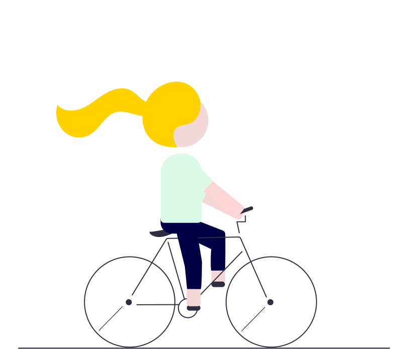

👋
Hello, moi c'est Margaux!
Actuellement en reconversion dans le developpement informatique à l’école Ada Tech School, je recherche une alternance à partir de juin 2021 dans une entreprise de la TechForGood.
🌏
Je viens...
du nord de la France. Mais j’ai pas mal bougé! J’ai fait ma prépa à Paris, mon école de commerce à Nantes, un stage aux US, un échange et VIE en Chine. Après un dernier stop à Berlin, je suis revenue dans notre belle capitale il y a 3 ans.
👔
J'ai travaillé...
principalement dans des institutions financières (Mazars et Bpifrance) pour accompagner des chefs d’entreprises dans leur développement en France et à l’internationnal.
✨
Puis j'ai découvert...
le développement informatique au sein de la fintech Sowefund. En travaillant avec des developpeurs en tant que Project Manager, j’ai decouvert un métier challengeant, tourné vers la résolution de problèmes complexes et surprenamment créatif. Après 2 années, j’ai eu envie de passer de l’autre coté!
